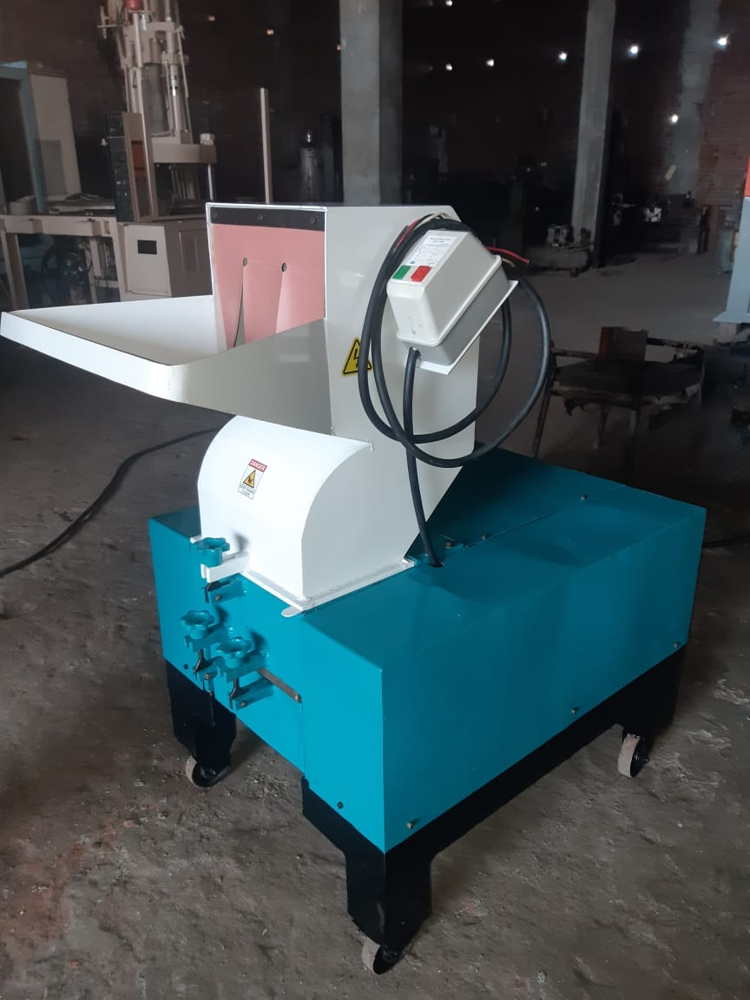
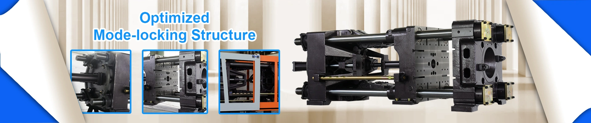
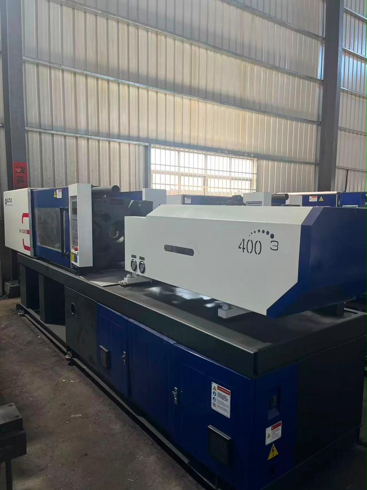
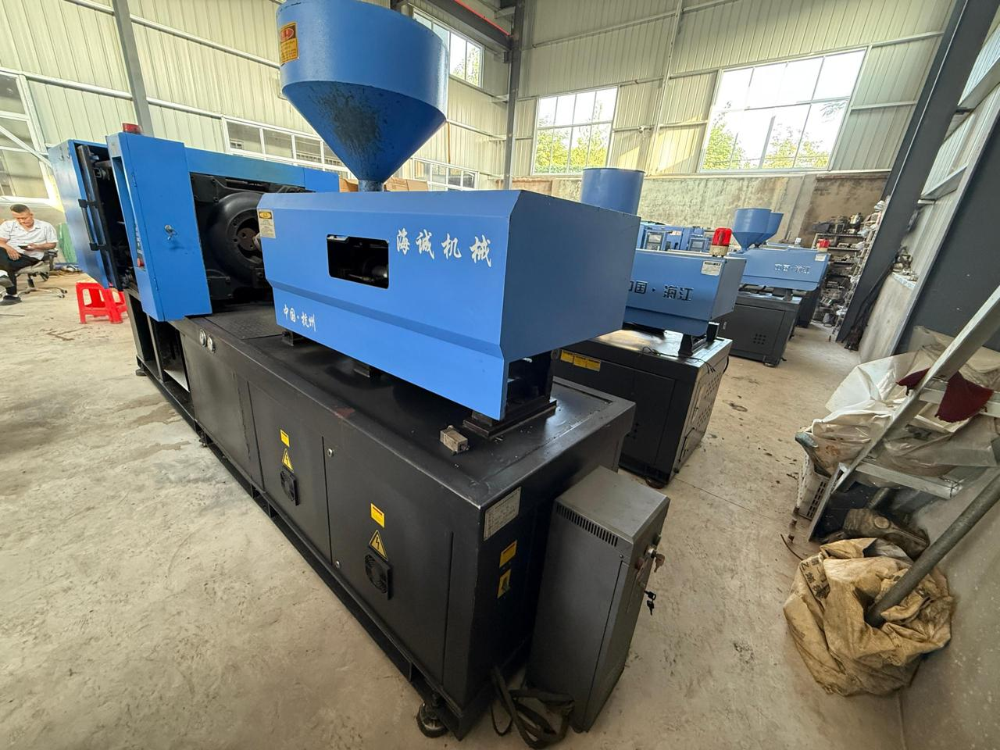
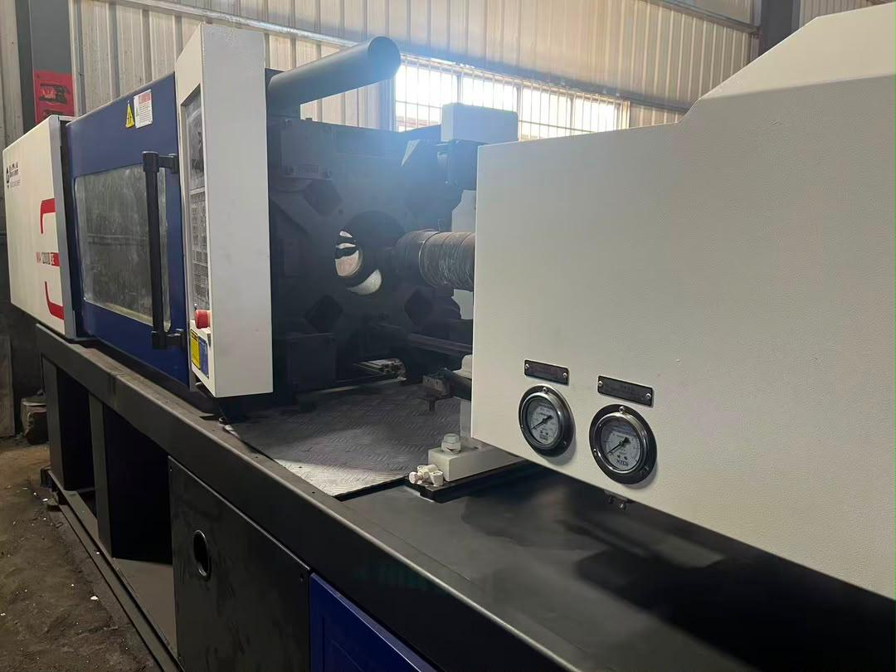
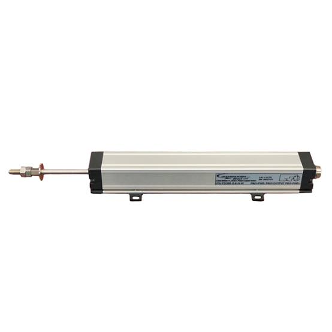
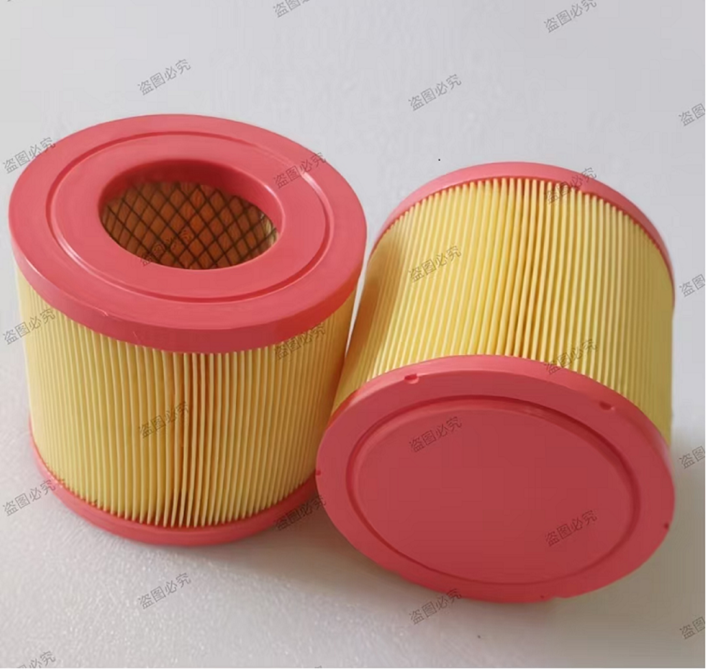
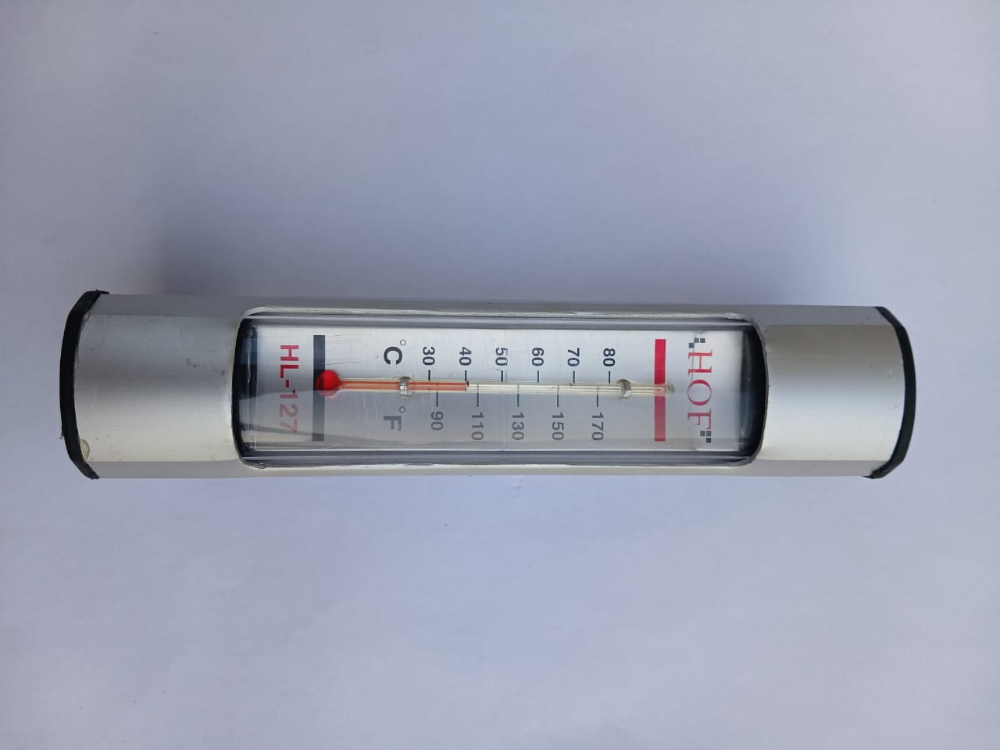
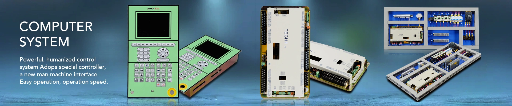

Plastic Injection Moulding Machines
Plastic injection moulding machines are used to manufacture plastic products for different industries.
The machine melts plastic material and injects it into a mould. After cooling, the mould opens and the finished product is removed.


Plastic Crusher / Granulator Machine
Plastic crusher machines are designed for recycling and size reduction. They take scrap plastic, defective products, or off-cuts and grind them down into small, uniform flakes or pellets. These recycled materials can then be reused in the injection moulding process, reducing waste and production costs.
Plastic Injection Moulding Video
Watch a demonstration of the plastic injection moulding machinery in action.
Observe how the machine melts plastic material, injects it into a precision mould, and produces finished components.

Our Machinery Gallery
Haitian MA1600

Haitian MA1200

Alpha ZX100

Linear

Air compressor

Oil level & temperature gauge


| Product Type | Main Function | Features / Examples | Common Applications |
|---|---|---|---|
| Injection Moulding Machine | Melts plastic and injects it into a mould. | Injection unit, clamping unit and heating system. | Household products, plastic components and automotive parts. |
| Servo-Hydraulic Machine | Uses a servo motor and hydraulic system to control machine operations. | Servo motor, hydraulic pump and energy-efficient operation. | General plastic manufacturing and industrial production. |
| Blow Moulding Machine | Uses air pressure to shape heated plastic into hollow products. | Blowing system, mould and air pressure control. | Plastic bottles and containers. |
| PET Blow Moulding Machine | Shapes PET preforms into bottles using heat and air pressure. | Heating system, blowing pressure and mould cavities. | Water bottles, juice bottles and beverage containers. |
| CNC Machinery | Uses computer-controlled operations to cut and shape materials. | Control system, machining accuracy and spindle. | Industrial parts and precision machining. |
| Machinery Parts | Replacement components used to maintain and repair machines. | Hydraulic components, screws, barrels and other spare parts. | Machine maintenance and replacement. |
| Machinery Accessories | Additional equipment used to support machine operations. | Hoppers, dryers, loaders and other auxiliary equipment. | Improving production and material handling. |
Note: Features and examples are general product information. Exact specifications and availability depend on the machine model and product.